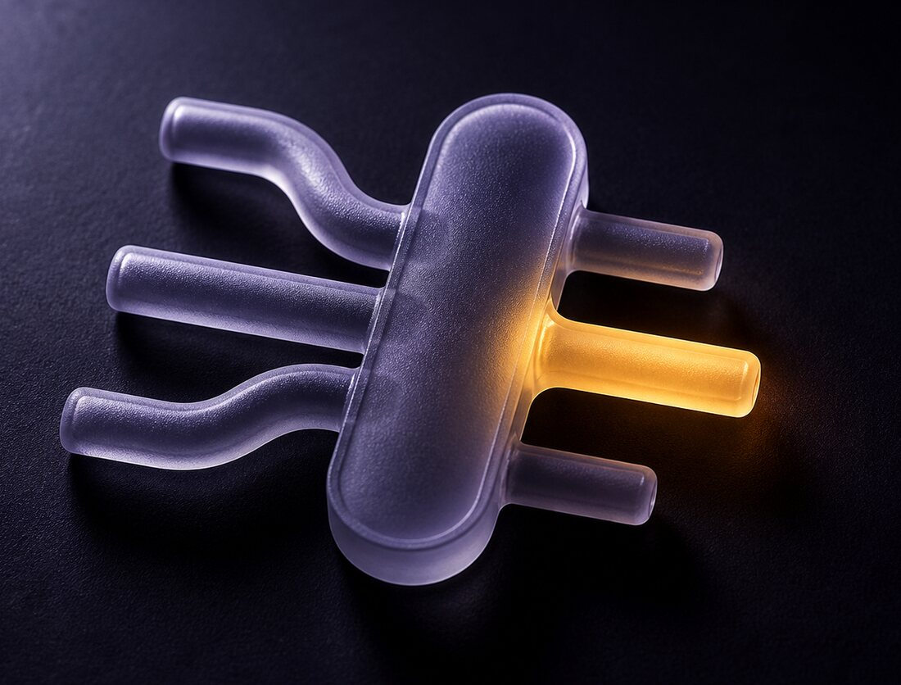

Claude Code starts every tool you've connected, every time you open it, whether you touch them or not. mcp-router starts one only when you actually use it, then puts it back to sleep.
/bin/bash -c "$(curl -fsSL https://mcp-router.fledgeling.app/install.sh)"
It takes your existing setup with it. Nothing to reconnect.

Open Claude Code and it launches every tool you've ever connected to it. Open it again in another project and it launches them all over again. On my Mac that came to 190 running programs and about 12 GB of memory. Most had never been used once.
Each tool talks to each window down its own private wire, one window to one copy of the tool. Two windows can't share, because sharing was never built into the standard they speak. So the number isn't mysterious. It's multiplication.
You don't reconnect anything. It reads the tools you've already got, moves them across, and keeps a backup of the file it changed. Then you open a fresh window and carry on.
Every tool already in your config is copied into the router's own list, exactly as you had it, environment settings and all.
Each one is started once, asked what it can do, and shut down again. That answer is kept on disk, which is why nothing needs to run afterwards.
Two small background jobs, one to answer your windows and one to watch for new tools. Both start with your Mac and neither asks you anything.
Add a new tool the way you always have. Within a few seconds the entry disappears from your config, and that's the router adopting it rather than anything going wrong. It checks the tool actually works before it takes it, so a typo stays sitting where you typed it, in plain sight.
Removing a tool used to be how you stopped paying for one you rarely called, because it started up whether you wanted it or not. Under the router an unused tool costs a few kilobytes of notes on a disk and nothing else. No program, no memory, no waiting at startup. So the honest advice is to leave it, unless its commands are cluttering the list your assistant reads.
Take it out of ~/.claude/mcp-router/servers.json, then mcpr index --force
That file is where your tools live now, rather than your Claude config. Full steps are in the README.
Runs on macOS. Removing it puts every tool back exactly where it came from.
/bin/bash -c "$(curl -fsSL https://mcp-router.fledgeling.app/install.sh)"